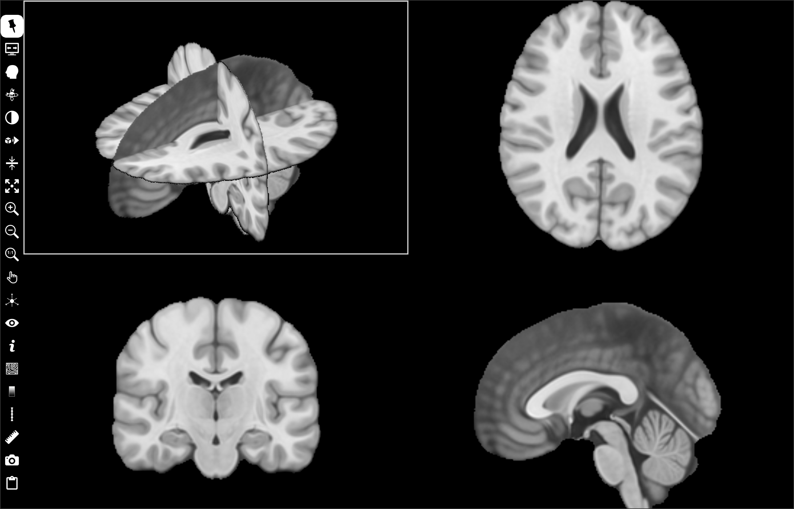
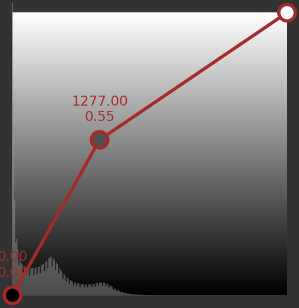
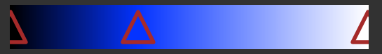

Orthogonal view widget
This widget, placed in the central area, displays 2D synchronized orthogonal slices of a reference volume in three cells (axial top-right cell, coronal bottom-left cell, sagittal bottom-right cell), and a synchronized 3D volume renderer in the top-left cell.
Other volume(s) can overlay the reference (popup menu “Display as overlay” of one or more thumbnail volumes). It can display meshes, trajectory/target tools and streamlines (Mesh, Target/Trajectory, Tracking), but it does not manage ROI (ROI, ROI Tools).
Left-click to select a grid cell. Some controls can be applied only to a selected cell. This cell is outlined in white.
Controls
In 2D cells:
MouseWheel slices through image,
Up or Left key to display previous slice,
Down or Right key to display next slice,
Left-click to move cursor position.
In 3D cell (top-left):
MouseWheel slices through selected selected plane,
Up or Left key to previous slice of the selected plane,
Down or Right key to next slice of the selected plane,
Left-click to select the plane of a slice,
Left-click to select a streamline, and then use mousewheel to move cursor position along the streamline,
Left-click + CTRL key (CMD key MacOs platform) to move cursor position,
Left-click and drag to rotate view.
Common to all cells:
MouseWheel + CTRL key (CMD key MacOs platform) to change zoom,
Up or Left + CTRL key (CMD key MacOs platform) to zoom out,
Down or Right + CTRL key (CMD key MacOs platform) to zoom in,
Left-click + CTRL key (CMD key MacOs platform) and drag to change zoom,
Left-click + ALT key and drag to move the viewpoint,
Left-click + SHIFT key and drag to change window/level,
Right-click + CTRL Key (CMD key MacOs platform) to show a popup menu.
Icon bar
Orthogonal view widget includes a vertical icon bar to the left:

Left-click to select/unselect. When this button is unselected, the icon bar is hidden when the mouse cursor leaves it. The icon bar is displayed when the mouse cursor is moved to the left border of the grid. If this button is selected, the icon bar is always visible.

Left-click to select/unselect. Toggle between full-screen and normal display modes. In full-screen mode, the slice view widget is extended to the full screen. Press F11 or ESC key to exit full-screen mode.
Left-click to display a menu:
Crop picked region, crop the picked quadrant of the texture rendering (top-anterior-left, top-anterior-right, top-posterior-left, top-posterior-right, bottom-anterior-left, bottom-anterior-right, bottom-posterior-left or bottom-posterior-right).
Uncrop volume rendering, uncrop the texture rendering.
Blend mode, select blend mode used for texture rendering (composite, maximum intensity, minimum intensity, average intensity, additive, isosurface)
Transfer function, load or save transfer functions (scalar, gradient, color)

Left-click to display a menu and select a predefined camera position in the 3D volume renderer cell: Top, Bottom, Left, Right, Front or Back.
Left-click to display transfer function widget (see Transfer function widget).
{kind=link}
{kind=link}
Left-click to display a menu:
Default alignment, the three orthogonal 2D cells are aligned to native axes: axial, coronal and sagittal orientations.
3D view camera alignment, the three orthogonal 2D cells are aligned to the camera axes of the 3D volume renderer cell. The three orthogonal 2D cells are automatically updated if the camera viewpoint of the 3D volume renderer cell changes.
AC-PC alignment, the three orthogonal 2D cells are aligned to AC-PC plan. This menu is only avalaible if AC and PC of the reference volume are defined.
Tool trajectory alignment, the three orthogonal 2D cells are aligned to a trajectory tool axes. The three orthogonal 2D cells are automatically updated if the trajectory changes. This menu is available if at least one trajectory has been added to the view.
Left-click to display a menu:
Slice step, to edit the distance covered when the slice changes (mousewheel, up/left/down/right keys) in the three orthogonal 2D cells.
Slab thickness, to edit the thickness of the slab in mm used in the three orthogonal 2D cells.
Slab type, to select the function used to accumulate the signal in the thickness of the slab: mean, sum, minimum or maximum.

Left-click to select/unselect. Expand the selected cell to the whole widget surface (+ shortkey).

Left-click to zoom in (CTRL Up shortkey or CTRL MouseWheel).

Left-click to zoom out (CTRL Down shortkey or CTRL MouseWheel).

Left-click to apply default zoom (0 shortkey).
{kind=link}
{kind=link}

Left-click to display a menu and choose an action mode:
Move, move the slice viewpoint by pressing the left mouse button and dragging.
Zoom, change the zoom factor by pressing the left mouse button and dragging.
Level/window, change the window thresholds by pressing the left mouse button and dragging.
Cursor follows mouse, in this mode, the cursor position follows the mouse without clicking.
Centered cursor, in this mode, slice viewpoint is moved and centered on the point clicked with the left mouse button.
No action, exit previous action mode.

Cursor is drawn with three intersecting orthognal lines in the 3D renderer cell. It associates a sphere with the center projected onto the intersection of the three axis lines. Left-click to display a menu to select sphere visbility and radius.
Cursor radius, to edit the sphere radius in mm.
Cursor opacity, to edit the sphere opacity (0.0 tansparent, 1.0 opaque).

Left-click to display a menu and set widget visibility.
cursor (x shortkey), cursor visbility (horizontal and vertical white lines intersect).
Information (i shortkey), information visibility. Various information can be displayed in each corner of the cell (type of information is selected with
 button).
button).Orientation labels (l shortkey), orientation labels visibility: L (left), R (right), S (superior), I (inferior), A (anterior), P (posterior).
Orientation marker (m shortkey), orientation marker visibility, 3D marker can be displayed at bottom-right (type of marker is selected with
button).ROI, ROI visibility.
Colorbar (b shortkey), colorbar visibility (select colorbar position with
 button).
button).Ruler (r shortkey), ruler visibility (select colorbar position with button).
Tooltip (t shortkey), tooltip visibility.
3D axial slice, axial plane visibility in the 3D renderer cell.
3D coronal slice, coronal plane visibility in the 3D renderer cell.
3D sagittal slice, sagittal plane visibility in the 3D renderer cell.
All 3D slices, planes visibility in the 3D renderer cell.
All, visibility of all widgets.
Texture volume rendering, texture rendering visibility in the 3D renderer cell.
Outer mesh isosurface, automatic outer isosurface visibility in the 3D renderer cell.
{kind=link}
Left-click to display a menu and select the type of information displayed, if
information is checked.Identity, patient identity (firstname, lastname, birthdate) at top-left corner.
Image attributes, image attributes (ID, matrix size, field-of-view, voxel spacing, datatype) at top-right corner.
Acquisition attributes, acquisition attributes (orientation, modality, sequence, date of scan) at bottom-left.
World coordinate, world coordinates in mm at mouse position.
Leksell coordinate, Leksell space coordinates at mouse position (if fiducial markers of a Leksell stereotaxic frame are first detected).
AC-PC, relative AC-PC world coordinates in mm at mouse position (if anterior and posterior commissures are selected first).
Voxel value, scalar value of voxel at mouse position.
Voxel overlay value, overlay scalar value of voxel at mouse position.
Orientation marker shape, Cube with L-R-S-I-A-P labels on its faces, 3D brain, 3D head, 3D bust, 3D body or 3D axes.
Left-click to display a menu to iso-value lines as overlay.
 to chose line color.
to chose line color. to chose line opacity.
to chose line opacity.Isoline value box to edit one or more iso-value splits using a space character.
Check volume name (reference volume or overlays) used to perform iso-value lines.
Left-click to display a menu and select the colorbar position: left, right, top or bottom border.
Left-click to display a menu and select ruler position: left, right, top or bottom border.
{kind=link}

Left-click to display a menu to add an interactive tool.
Distance, used to measure the distance in mm between two points. Left-click in the view widget to position the two endpoints. Left-press and drag to move the endpoints. Right-click on distance label to display popup menu to select color or delete tool.
Orthogonal distances, used to measure two orthogonal distances in mm. Left-click in the view widget to position the four endpoints. Left-press and drag to move the endpoints. Right-click on distance label to display popup menu to select color or delete tool.
Angle, used to measure angle in degrees between two lines. Left-click in the view widget to position the three endpoints. Left-press and drag to move the endpoints. Right-click on angle label to display popup menu to select color or delete tool.
Remove all, remove all tools.

Left-click to display a screenshots management menu:
Save grid capture…, take a screenshot of the slice view.
Save selected view capture, take a screenshot of the selected cell (outlined in white, SPACE shortkey)
Save capture from slice series, take a series of screenshots of each slice, in the current orientation.
Send selected view capture to screenshots preview or shortcut key SPACE, take a screenshot of the selected cell and copy it to the screenshot manager.

Left-click to display a menu to take screenshot and copy it to the clipboard.
Copy grid capture to clipboard, take a screenshot of the slice view and copy it to the clipboard.
Copy selected view capture to clipboard, take a screenshot of the selected cell and copy it to the clipboard.
Transfer function widget
The transfer function is used for texture rendering of the reference volume. The purpose of a transfer function is to associate a color and opacity with each scalar value of the volume.
The transfer widget displays a brown line that is the transfer function. This line is initially drawn between two points, which are displayed as circles at either end. Each point has a color, drawn inside circle, and opacity is represented by the height in the vertical axis of the point’s position (0.0 i.e. transparent, if the point is in the widget’s lower border; 1.0 i.e. opaque, if the point is in the widget’s upper border). The scalar value and the opacity values are displayed above each point.
Double-click in the free widget area to add a new point. The line is drawn between the points, which represents the linear interpolation of opacity and color values between transfer function points. Press left mouse button and drag to move a point.
Right-click on a point to show popup menu:
Remove point, to remove the current point from the transfer function line.
Clear all, to remove all points except ends.
Save…, to save the current transfer function.
Load…, to load a transfer function.
Right-click in the free widget area shows the same popup menu with the exception of the following item: - Add new to add a new point to the transfer function line.
The second transfer widget is similar, but works with the gradient magnitude of the volume (not scalar values of the volume). It is optional, unckeck “Gradient transfer function” to ignore this tranfer function. It is interesting to improve the rendering of object edges, since high gradient values in edges are associated with high alpha.
The last widget defines the color part of the transfer function. The background of the widget shows the colormap. Initially, only two color points are defined, displayed as triangles on the left and right edges.
Double-click in the free widget area add a new color point. Press left mouse button and drag to move a color point.
Right-click on a point to show popup menu:
Remove point, remove the current color point.
Change point color, change the color of the current point (displays a dialog box for color selection).
Swap color with next point, swap the color between the current point and the next.
Swap color with previous point, swap the color between the current point and the previous.
Clear all, to clear all the points except ends.
Save…, to save the current color transfer function.
Load…, to load the current color transfer function.
Two buttons are available on the bottom:
Open, open transfer functions (scalar, gradient and color)
Save, save the transfer functions (scalar, gradient and color)